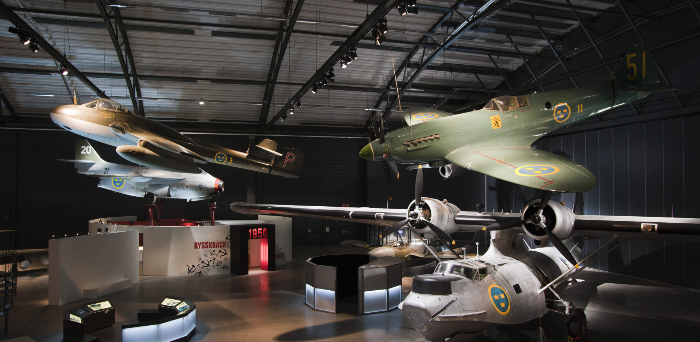
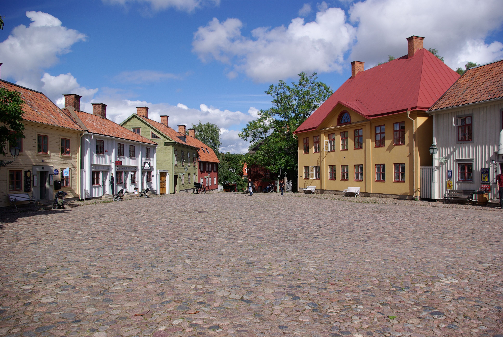

Upptäck Linköpings Sevärdheter
Linköping är en stad rik på historia och kultur, med många sevärdheter att utforska. Här är två av de mest populära attraktionerna som du inte får missa när du besöker staden.
Flygvapenmuseum Malmslätt
Flygvapenmuseum är ett svenskt statligt teknik- och kulturhistoriskt museum med utställningar om militärflygets utveckling från tidigt 1900-tal fram till i dag. Flygvapenmuseum ligger vid militärflygfältet Malmen i Malmslätt väster om Linköping. Det visar flygmaskiner från pionjärtiden fram till dagens JAS 39 Gripen.
 Läs mer om FlygvapenmuseumGamla Linköping
Gamla Linköping är ett friluftsmuseum i västra Linköping där du kan uppleva hur staden såg ut förr i tiden. Området består av tre delar: stadskvarteren med flyttade hus från centrum, den lantliga Valla gård och den gröna Vallaskogen. Här hittar du allt från museer, butiker och hantverkare till mysiga bostadshus och föreningslokaler. I Valla gård finns flera museer, bland annat ett järnvägsmuseum, och 2025 öppnar den nya byggnaden för science centret Fenomenmagasinet.
 Läs mer om Gamla Linköping